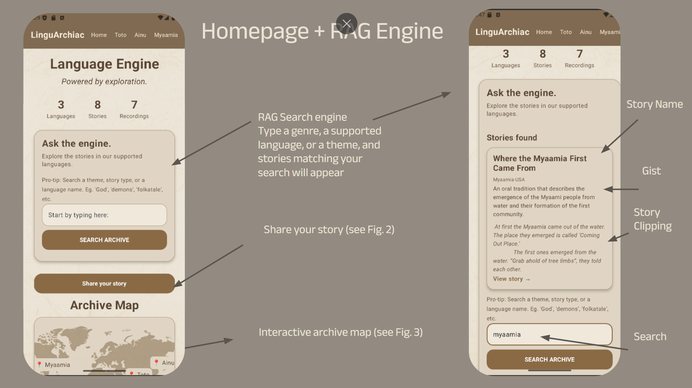

RAG SEARCH ENGINE
Ask the Archive.

LinguArchiac uses retrieval-augmented generation to help users explore information grounded in its archived stories.
RAG SEARCH ENGINE

LinguArchiac uses retrieval-augmented generation to help users explore information grounded in its archived stories.